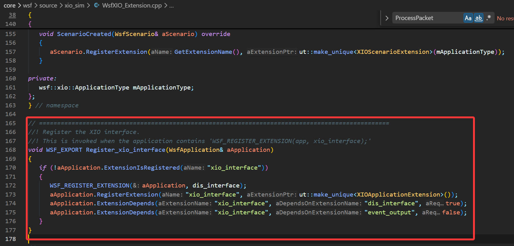
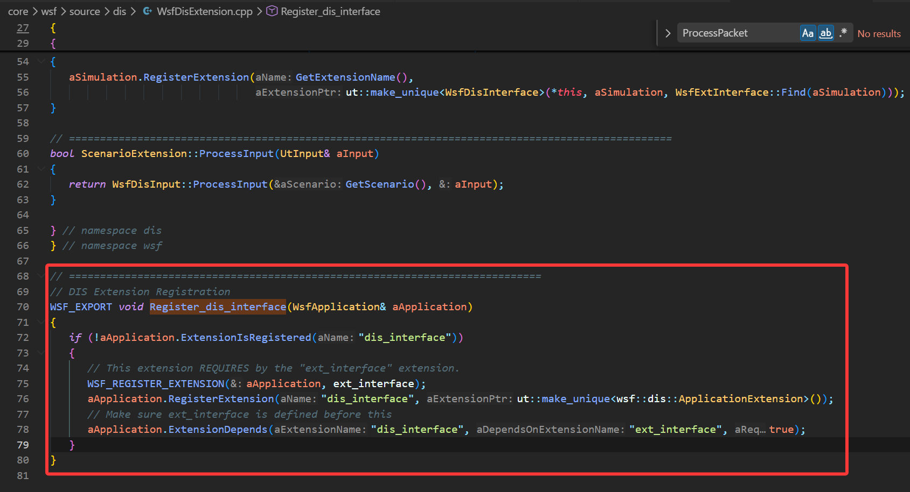
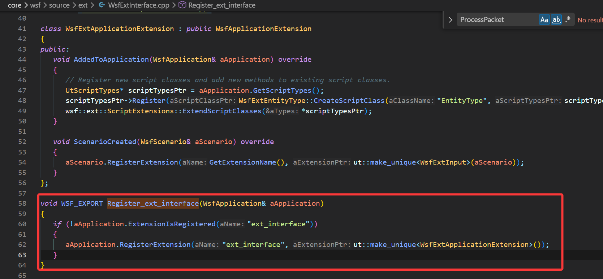
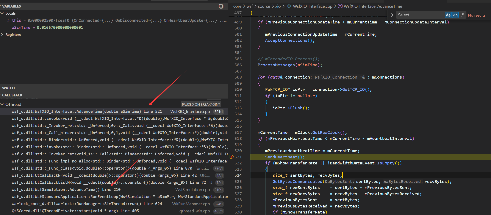

AFSim
分布式仿真
DIS和XIO
下面按“接收 → 处理 → 发送”的顺序，把 DIS 和 XIO 两条链路分别串起来（分布式场景里通常两者并行存在）。
DIS：实体状态同步链路
接收（网络 → PDU 对象）
UDP Socket 收包后写入 GenIO 的接收缓冲：
GenUDP_IO::Receive会重置接收缓冲并调用ReceiveBuffer(...)把数据读进缓冲区（[GenUDP_IO.cpp#L42-L61]）。DIS 的 UDP Device 从 GenIO 缓冲中取数据，够一个 PDU 就解析：
WsfDisUDP_Device::GetPdu里调用mGenIOPtr->Receive(0)，然后DisPdu::Create(*mGenIOPtr, aPduFactoryPtr)生成具体 PDU（[WsfDisUDP_Device.cpp#L126-L158]）。
处理（PDU 对象 → 仿真对象/状态）
每个仿真步由
WsfDisInterface::AdvanceTime拉取并处理所有待处理 PDU：过滤后直接调用pduPtr->Process()（[WsfDisInterface.cpp#L1203-L1275]）。以最关键的 Entity State 为例：
WsfDisEntityState::Process()会忽略影子站点（
cSHADOW_SITE）的 PDU；查本地是否已有对应实体；没有则创建外部平台，有则更新平台状态（[WsfDisEntityState.cpp#L68-L134]）。
“新实体 → 本地外部平台（你说的 Shadow/外部实体落地）”的核心入口是
WsfDisInterface::AddExternalPlatformP：选择平台类型、创建平台、必要时剥离组件、挂WsfDisMover，然后Simulation.AddPlatform(...)（[WsfDisInterface.cpp#L506-L646]）。“ShadowPlatform（调试影子）”是可选逻辑：满足 shadow 配置时
AddShadowPlatform(...)额外创建_shadow平台并设置cSHADOW_SITE）。
发送（仿真状态 → 网络）
发送最终落在 Device 的
PutPduP：设置时间戳/仿真时间，aPdu.Put(*mGenIOPtr)序列化进发送缓冲，然后mGenIOPtr->Send()发 UDP 包（[WsfDisUDP_Device.cpp#L160-L174]）。触发“什么时候发”通常是：心跳、阈值（位置/姿态变化）、以及特定事件（开火/爆炸等）。具体策略在
WsfDisPlatform/WsfDisInterface的更新逻辑里决定，然后丢给 Device 发。
XIO：AFSIM 内部生态通信链路（心跳发现 + TCP/UDP 数据）
接收（网络 → XIO Packet 对象）
XIO 在
Initialize里启动连接管理（监听 TCP、建立 UDP 连接等）（[WsfXIO_Interface.cpp#L155-L192]）。UDP/Broadcast/Multicast 目标连接通过
ConnectToTarget建立：内部创建GenUDP_IO，包装成PakUDP_IO，交给mThreadedIO异步收包（[WsfXIO_Interface.cpp#L194-L273]）。每帧调用
WsfXIO_Interface::AdvanceTime，会执行ProcessMessages(aSimTime)处理所有已收包（[WsfXIO_Interface.cpp#L496-L541]）。
处理（XIO Packet → 回调/发布订阅/请求响应）
ProcessMessages从线程 I/O 中Extract出 packet 列表，对“同步包”做时间戳换算并可能缓存延迟处理，然后用PakProcessor::ProcessPacket(&pkt, true)分发给具体 packet 类型处理器（[WsfXIO_Interface.cpp#L544-L579]）。packet 类型注册在
WsfXIO_PacketRegistry::RegisterPackets，未注册的包不能收发（[WsfXIO_PacketRegistry.cpp#L18-L66]）。XIO 的“业务处理”主要靠回调绑定：构造函数里把心跳、初始化、服务发现等 packet 绑定到对应 handler（[WsfXIO_Interface.cpp#L83-L99]）。
发送（发布/请求/心跳 → 网络）
WsfXIO_Interface::Send/SendToAll*会统一打上ApplicationId和TimeStamp，然后交给mThreadedIO.Send(...)（[WsfXIO_Interface.cpp#L353-L412]）。心跳：
SendHeartbeat()构造WsfXIO_HeartbeatPkt并通过 UDP 广播给所有人（[WsfXIO_Interface.cpp#L646-L654]），接收端HandleHeartbeat收到后可触发 TCP 连接建立（[WsfXIO_Interface.cpp#L656-L679]）。发布订阅：发布时会把任意可序列化对象打包到
GenBuffer（大端），用PakO序列化，然后发出去（[WsfXIO_Publisher.hpp#L90-L100]）。
把两条链路放到“分布式仿真”里怎么理解
DIS：负责“不同仿真器/不同进程之间的实体状态同步”（标准 PDU、UDP、多播/广播、
pdu->Process()更新平台）。XIO：负责“AFSIM 生态内部的控制/查询/发布订阅”（心跳发现 + TCP/UDP，Packet 注册分发，应用级消息）。
如果你告诉我你关心的“数据”具体是哪类（实体位置、轨迹 Track、指令控制、传感器报告等），我可以把对应的 packet/PDU 类型再精确到具体类名和处理函数链路。
DIS服务于XIO
工程里交叉点 非常明确：在 core/wsf/source/xio_sim 里专门有一层把 XIO 和 DIS 绑定起来（不是 xio 的底层通信层去“调用 DIS 协议栈”，而是“仿真集成层”把两者的信息互通）。
主要交叉点有三类：
1) XIO 作为 DIS 的“信息/控制通道”
XIO 定义了与 DIS 相关的 XIO Packet，并提供服务（Service）去处理这些请求/订阅。
WsfXIO_DisService：XIO 服务端，内部直接持有WsfDisInterface*见 [WsfXIO_DisService.hpp]：
WsfDisInterface* mDisInterfacePtr;处理
WsfXIO_RequestDisDataPkt（请求 DIS 数据）发送
WsfXIO_DisPlatformInfoPkt（返回平台/实体的 DIS 相关信息）
这说明：XIO 可以让外部应用（如 Warlock/工具）请求“DIS 视角”的数据，而不用自己实现 DIS。
2) XIO 订阅/推送 DIS 平台信息（PlatformInfo）
WsfXIO_DisService 还订阅仿真平台生命周期事件，然后通过 XIO 推送“平台对应的 DIS 信息”。
[WsfXIO_DisService.hpp]：
PlatformInitialized(...)PlatformDeleted(...)SendPlatformInfo(...)PackPlatformInfo(...)
这类交叉的含义是：DIS 负责实体同步；XIO 负责把“有哪些实体、实体对应的 DIS 元数据、状态摘要”等以工具友好的方式同步给外部应用。
3) 覆盖/扩展 DIS 平台创建与消息路由
还有一层扩展叫 WsfXIO_DisExtension，它的注释就写明了它要“override DIS 平台创建”和“通过 XIO 路由 WsfMessage”。
[WsfXIO_DisExtension.hpp]：
“Overrides the creation of DIS platforms.”
“Provides translation and routing of WsfMessage's sent over XIO”
这类交叉通常用于：在分布式应用/工具链中，让某些“原本走 DIS 或依赖 DIS 的信息”可以通过 XIO 更灵活地传递/映射。



DIS遵循IEEE协议，还有其他的分布式仿真协议，他们公用ExtInterface接口。一句话总结
底层上：XIO 和 DIS 是两套独立通信机制。
集成上：在
xio_sim这层，XIO 会读取/使用 DIS 接口（WsfDisInterface）提供的信息，并把这些信息包装成 XIO 的请求/响应或订阅推送给外部应用；同时也可能通过扩展点影响 DIS 平台创建/消息路由。
如果你想我把“交叉调用链”画出来（例如 WsfXIO_RequestDisDataPkt → WsfXIO_DisService::HandleRequest → WsfDisInterface/... → WsfXIO_DisPlatformInfoPkt），我可以继续把对应 .cpp 的关键实现段落也定位出来。
数据流转

不难看出，XIO_Interface的AdvanceTime是在仿真线程中做的单向 (Pkt)
是双向的基础
双向（Request和Query）
Query ：一次性“询问”，等一个“结论”（resolved / timeout / disconnected）。
Request ：订阅式“请求”，会持续收数据，直到一方取消。
从代码看区别
生命周期
Query 构造时就注册到 QueryManager ，完成后 Complete() 立即移除（ WsfXIO_Query.cpp , WsfXIO_Query.cpp ）。
Request 由 RequestManager 持有， AddRequest() 后会 Initialized() 并发送请求，之后可多次接收 Response （ WsfXIO_Request.cpp , WsfXIO_Request.hpp ）。
消息模式
Query 的注释写得很明确：实际请求参数消息要“另外发送”， Query 本体主要跟踪“结果”（ WsfXIO_Query.hpp ）。
Request 自己有 SendRequest(WsfXIO_RequestDataPkt&) ，并通过 HandleResponse(...) 接收服务端连续回应（ WsfXIO_Request.hpp , WsfXIO_Request.cpp ）。
结束条件
Query ： resolution / timeout / disconnect 三类结束（ WsfXIO_Query.cpp ）。
Request ：通过取消包或连接断开结束； RequestManager 会处理远端取消和本地取消（ WsfXIO_Request.cpp , WsfXIO_Request.cpp ）。
连接要求
Query 强制可靠连接（断言 IsReliable() ）（ WsfXIO_Query.cpp ）。
Request 可以设置是否可靠（构造参数 aIsReliable ）（ WsfXIO_Request.hpp ）。
序列化和反序列化
“谁来调用 Serialize”：不是你手动调，而是 PacketIO（PakTCP_IO / PakUDP_IO）在发送/接收时自动调。
“基础类型 vs 自定义类型怎么序列化”**：由 operator& 做分发，基础类型走 PakO/PakI::Serialize → GenBuffer::Put/Get；自定义类型走 Serialize/Save/Load 规则（成员函数或非成员函数）。
1) Serialize 到底是谁调用的？（发送与接收调用链）
发送链路（以 XIO 为例）
你代码里一般是
connection->Send(pkt)，例如WsfXIO_Connection::Send（[WsfXIO_Connection.cpp#L45-L48](file:///d:/WorkSpace/afsim-2.9.0-win64/swdev/src/core/wsf/source/xio/WsfXIO_Connection.cpp#L45-L48)）它会转到
WsfXIO_Interface::Send，再转给PakThreadedIO::Send，最终调用具体 socket I/O 的Send（[PakThreadedIO.cpp#L101-L106](file:///d:/WorkSpace/afsim-2.9.0-win64/swdev/src/tools/packetio/source/PakThreadedIO.cpp#L101-L106)）如果是 TCP，真正序列化发生在
PakTCP_IO::Send(const PakPacket&)里：它先查
PakProcessor里注册的 PacketInfo（GetPacketInfo(aPkt.ID())）然后调用
info->mWriteFn(pkt, PakO)（[PakTCP_IO.cpp#L73-L88](file:///d:/WorkSpace/afsim-2.9.0-win64/swdev/src/tools/packetio/source/PakTCP_IO.cpp#L73-L88)）
而这个 mWriteFn 是怎么来的？是在注册 packet 时由 PakProcessor 生成的函数指针，指向“调用该 packet 的 Serialize”：
PakProcessorDetail::SerializeBind<PKT_TYPE, PakO>::Serialize里面就是((PKT_TYPE&)aPkt).Serialize(aBuff)（[PakProcessor.hpp#L40-L45](file:///d:/WorkSpace/afsim-2.9.0-win64/swdev/src/tools/packetio/source/PakProcessor.hpp#L40-L45)）注册时把
mWriteFn绑定到这个函数指针（[PakProcessor.hpp#L261-L268](file:///d:/WorkSpace/afsim-2.9.0-win64/swdev/src/tools/packetio/source/PakProcessor.hpp#L261-L268)）
结论：Serialize 是在 “发送时 PakTCP_IO/PakUDP_IO 写包” 阶段由 PakProcessor 的 mWriteFn 自动调用的，不需要你手动调。
接收链路（同理）
TCP 接收时，PakTCP_IO::Receive 会找到该 packet 的 mReadFn，然后调用它读字段：
[PakTCP_IO.cpp#L252-L254](file:///d:/WorkSpace/afsim-2.9.0-win64/swdev/src/tools/packetio/source/PakTCP_IO.cpp#L252-L254)
mReadFn 同样是 SerializeBind<PKT_TYPE, PakI>::Serialize，也就是调用 pkt.Serialize(PakI)。
2) 基础类型怎么序列化？自定义类型怎么序列化？
2.1 基础类型（int/float/double/unsigned…）
你在 packet 里写的这一句：
aBuff & mPlatformIndex & mPitchRate & mRollRate & mYawRate & mThrottle;
这里的 aBuff 可能是：
发送时：
PakO（写入）接收时：
PakI（读出）
& 运算符的实现来自 [PakSerializeImpl.hpp](file:///d:/WorkSpace/afsim-2.9.0-win64/swdev/src/tools/packetio/source/PakSerializeImpl.hpp)：
operator&(PakO&, T&)/operator&(PakI&, T&)会通过 traits 分发对基础类型会走：
aAr.Serialize(value)（[PakSerializeImpl.hpp#L66-L71](file:///d:/WorkSpace/afsim-2.9.0-win64/swdev/src/tools/packetio/source/PakSerializeImpl.hpp#L66-L71)）
而 PakO::Serialize / PakI::Serialize 最终就是对 GenBuffer 的 Put/Get：
PakO::Serialize(const T&)→mBufferPtr->Put(aVal)（[PakO.hpp#L40-L44](file:///d:/WorkSpace/afsim-2.9.0-win64/swdev/src/tools/packetio/source/PakO.hpp#L40-L44)）PakI::Serialize(T&)→mBufferPtr->Get(aVal)（[PakI.hpp#L37-L41](file:///d:/WorkSpace/afsim-2.9.0-win64/swdev/src/tools/packetio/source/PakI.hpp#L37-L41)）
所以基础类型的本质就是：
写：按顺序把值写进
GenBuffer读：按相同顺序从
GenBuffer读出来
2.2 自定义类型（struct/class）
Pak 的规则在 [PakSerialize.hpp](file:///d:/WorkSpace/afsim-2.9.0-win64/swdev/src/tools/packetio/source/PakSerialize.hpp#L12-L29) 里写得很清楚：自定义类型要能被序列化，满足以下任意一种即可：
类型里定义成员模板函数：
template<typename AR> void Serialize(AR& ar) { ... }或者提供非成员
Serialize(ar, T&)或者提供非成员
Save/Load或者是 Pak 已经内置支持的类型（std::string、vector、map 等）
当一个类型不是“基础类型”时，默认分发会走：
PakSerialization::Serialize(ar, value)，默认实现是value.Serialize(ar)（[PakSerializeImpl.hpp#L24-L28](file:///d:/WorkSpace/afsim-2.9.0-win64/swdev/src/tools/packetio/source/PakSerializeImpl.hpp#L24-L28)）
也就是说：自定义类型最终大概率是调用你定义的 T::Serialize(ar)（除非你提供了更高优先级的非成员 Serialize/Save/Load）。
3) 回到你的 FlightControlPkt：它具体序列化了什么？
你的 packet 通过
XIO_DEFINE_PACKET生成Serialize(aBuff)，它会先写 XIO 的包头（applicationId/flags/timestamp），再写你的字段（[WsfXIO_Packet.hpp#L92-L100](file:///d:/WorkSpace/afsim-2.9.0-win64/swdev/src/core/wsf/source/xio/WsfXIO_Packet.hpp#L92-L100)）包头序列化是
WsfXIO_Packet::Serialize：aBuff & mApplicationId & mFlags & mTimeStamp;（[WsfXIO_Packet.hpp#L63-L69](file:///d:/WorkSpace/afsim-2.9.0-win64/swdev/src/core/wsf/source/xio/WsfXIO_Packet.hpp#L63-L69)）你的字段序列化就是
unsigned/double这类基础类型，走PakO/PakI::Serialize→GenBuffer::Put/Get
如果你想彻底“看到写入发生在哪一行”，最关键的两处就是：
发送时真正触发
pkt.Serialize(PakO)的地方：(*info->mWriteFn)(pkt, *mSerializeWriter)（[PakTCP_IO.cpp#L77-L81](file:///d:/WorkSpace/afsim-2.9.0-win64/swdev/src/tools/packetio/source/PakTCP_IO.cpp#L77-L81)）基础类型真正写入 buffer 的地方：
PakO::Serialize → GenBuffer::Put（[PakO.hpp#L40-L44](file:///d:/WorkSpace/afsim-2.9.0-win64/swdev/src/tools/packetio/source/PakO.hpp#L40-L44)）
你如果愿意贴一下 “FlightControlPkt 是在哪里 Send(pkt) 的”，我也可以把它完整串成：发送端调用点 → PakTCP_IO/PakUDP_IO → Serialize → 对端 ReceiveNew → PakProcessor::ProcessPacket → 回调处理函数 的闭环调用链。
SFINAE
序列化用&运算符，还可以用>>运算符
template<typename T>
inline PakI& operator&(PakI& aAr, T& aValue)
{
typedef typename PakSerialization::SerializeInterface<PakI, T>::Dispatch Dispatch;
Dispatch::Go(aAr, aValue);
return aAr;
}
SerializeInterface顾名思义
template<class AR, typename T>
struct SerializeInterface
{
typedef T ValueType;
typedef SerializeTraits<ValueType> Traits;
typedef SerializeDispatch<AR, ValueType, typename Traits::serialize_trait_type, AR::cIS_OUTPUT> Dispatch;
};
Trait的模板匹配
template<class T>
struct SerializeTraits
{
typedef DefaultTypeTrait serialize_trait_type;
typedef T value_type;
};
#define DEFINE_TRAIT(TYPE_NAME, TRAIT_NAME) \
template<> \
struct SerializeTraits<TYPE_NAME> \
{ \
typedef TRAIT_NAME serialize_trait_type; \
};
DEFINE_TRAIT(signed short, BasicTypeTrait)
DEFINE_TRAIT(unsigned short, BasicTypeTrait)
DEFINE_TRAIT(char, BasicTypeTrait)
DEFINE_TRAIT(signed char, BasicTypeTrait)
DEFINE_TRAIT(unsigned char, BasicTypeTrait)
DEFINE_TRAIT(int, BasicTypeTrait)
DEFINE_TRAIT(long, BasicTypeTrait)
DEFINE_TRAIT(unsigned int, BasicTypeTrait)
DEFINE_TRAIT(unsigned long, BasicTypeTrait)
DEFINE_TRAIT(double, BasicTypeTrait)
DEFINE_TRAIT(float, BasicTypeTrait)
DEFINE_TRAIT(unsigned long long, BasicTypeTrait)
DEFINE_TRAIT(const signed short, BasicTypeTrait)
DEFINE_TRAIT(const unsigned short, BasicTypeTrait)
DEFINE_TRAIT(const char, BasicTypeTrait)
DEFINE_TRAIT(const signed char, BasicTypeTrait)
DEFINE_TRAIT(const unsigned char, BasicTypeTrait)
DEFINE_TRAIT(const int, BasicTypeTrait)
DEFINE_TRAIT(const long, BasicTypeTrait)
DEFINE_TRAIT(const unsigned int, BasicTypeTrait)
DEFINE_TRAIT(const unsigned long, BasicTypeTrait)
DEFINE_TRAIT(const double, BasicTypeTrait)
DEFINE_TRAIT(const float, BasicTypeTrait)
DEFINE_TRAIT(const unsigned long long, BasicTypeTrait)
#undef DEFINE_TRAIT
template<typename T>
struct non_const_type
{
typedef T type;
};
template<typename T>
struct non_const_type<const T>
{
typedef T type;
};
例如通过unsigned long long匹配到Trait是BasicType，然后将BasicType传入SerializeDispatcher，进而匹配对应的Serialize
template<class AR, typename T, typename TRAIT, bool IS_OUTPUT>
struct SerializeDispatch;
template<class AR, typename T>
struct SerializeDispatch<AR, T, DefaultTypeTrait, true>
{
typedef typename Non_Const<T>::Type ValueType;
static void Go(AR& aAr, T& aValue) { Save(aAr, const_cast<ValueType&>(aValue)); }
};
template<class AR, typename T>
struct SerializeDispatch<AR, T, DefaultTypeTrait, false>
{
typedef typename Non_Const<T>::Type ValueType;
static void Go(AR& aAr, T& aValue) { Load(aAr, const_cast<ValueType&>(aValue)); }
};
template<class AR, typename T, bool IS_OUTPUT>
struct SerializeDispatch<AR, T, BasicTypeTrait, IS_OUTPUT>
{
typedef typename Non_Const<T>::Type ValueType;
static void Go(AR& aAr, T& aValue) { aAr.Serialize(const_cast<ValueType&>(aValue)); }
};
template<class AR, typename T>
struct SerializeInterface
{
typedef T ValueType;
typedef SerializeTraits<ValueType> Traits;
typedef SerializeDispatch<AR, ValueType, typename Traits::serialize_trait_type, AR::cIS_OUTPUT> Dispatch;
};
总的来说，对于BasicValueType，直接reinterpret内存，对于DefaultType，调用特例化的模板方法（特例化的方法中，可能会继续触发operator &）。
Socket
代码很简单，首选一个TcpConnector监听系统分配的端口。然后脚本中IP和端口，ConnectToTarget方法会连接UDP。
bool WsfXIO_Interface::Initialize()
{
mInterfaceRequested |= (!mUDP_Targets.empty()); // The interface is instantiated if connections are requested
mShowConnections |= mDebugEnabled;
if (mInterfaceRequested)
{
mConnectorPtr = new PakTCP_Connector(this);
if (!mConnectorPtr->Listen(0))
{
ut::log::info() << "xio_interface: Could not bind to a port.";
}
else
{
mTCP_Port = mConnectorPtr->GetBoundPort();
if (mShowConnections)
{
auto out = ut::log::info() << "xio_interface: Accepting connections.";
out.AddNote() << "Port: " << mTCP_Port;
}
}
}
for (UDP_Target& target : mUDP_Targets)
{
ConnectToTarget(target);
}
// mUDP_Targets.clear(); //Why do we clear this here?
if (mInterfaceRequested)
{
mThreadedIO.Start();
mIsInitialized = true;
}
return true;
}
三个模糊概念
1) PakTCP_Server::mConnectionList 是什么
在 PakTCP_Server.hpp 里：
PakTCP_Server 是一个 通用的 TCP server 封装 （监听端口、accept 客户端）。
mConnectionList （ std::vector<GenTCP_IO*> ）是它内部维护的 已接受（accept）出来的 TCP 连接列表 ，元素类型是 GenTCP_IO* （更底层的 TCP IO 连接对象）。
这个类更偏“底层通用网络服务”，不包含 XIO 的握手、connectionId、applicationName 等语义。
2) PakTCP_Connector 是什么
在 PakTCP_Connector.hpp 里：
PakTCP_Connector 是 “连接建立器/接入器” ，同时做两件事：
Listen/Accept ：监听端口并接受新连接（server 侧）。 Accept() 返回的是 PakTCP_IO* （已经带 packet/header/serialize 的 TCP IO）。见 PakTCP_Connector.cpp
异步 connect ： BeginConnect() 发起非阻塞连接； CompleteConnect() 轮询完成连接并返回 PakTCP_IO* 。见 PakTCP_Connector.cpp
它内部用的是 GenTCP_Server ，但对外提供的是更上层的 PakTCP_IO ，方便直接发/收 PakPacket。 简单理解： PakTCP_Server 更像“纯 socket server”； PakTCP_Connector 更像“给 PacketIO 用的 server+client connect 管理器”。
3) WsfXIO_Interface::mConnections / WsfXIO_Connection 是什么（重点）
在 WsfXIO_Interface.hpp 里：
mConnections 是 XIO 层维护的 “当前所有 XIO 连接对象列表” （类型 ConnectionList ，元素是 WsfXIO_Connection* ）。
WsfXIO_Connection 是 XIO 对“连接”的统一抽象，它把底层 IO（TCP 或 UDP）包装起来，并附加 XIO 的语义信息：
PakSocketIO* mIOPtr ：真正负责发/收 packet 的对象（可能是 PakTCP_IO 或 PakUDP_IO ）
mConnectionId ：本地唯一连接 id
mApplicationName / mApplicationId / mApplicationType ：对端应用信息
IsReliable() ：用 mTCP_IO_Ptr != nullptr 判断是否可靠（TCP） 见 WsfXIO_Connection.hpp 。
另外 WsfXIO_Connection 继承了 PakConnection ，这个基类几乎是空的，只是为了在 packet 里能标识“sender 是哪个 connection”（XIO 收包时会 pkt->SetSender(mConnectionPtr) ，你之前看过 PakThreadedIO 那段）。
它们三者怎么串起来（XIO 的实际流程）
以 XIO 接受 TCP 连接为例：
WsfXIO_Interface 创建 PakTCP_Connector 并 Listen(0) 监听端口。见 WsfXIO_Interface.cpp
WsfXIO_Interface::AcceptConnections() 里 mConnectorPtr->Accept(0) 拿到 PakTCP_IO* ioPtr 。见 WsfXIO_Interface.cpp
用这个 ioPtr new 一个 WsfXIO_Connection(this, ioPtr) ，并放进 mConnections （这是 XIO 的“连接对象”）。见同段代码 WsfXIO_Interface.cpp
把 ioPtr 交给 PakThreadedIO.AddIO() ，后续收包由 reactor 线程驱动；但包最终会带着 sender= WsfXIO_Connection* 回到 XIO 层处理。 所以你可以把它们理解成：
PakTCP_Server ：底层 TCP 连接列表（GenTCP_IO*）
PakTCP_Connector ：把“建立 TCP 连接”这件事封装好，并产出 PakTCP_IO* （能发/收 packet）
WsfXIO_Connection ：XIO 自己的“连接对象”，里面持有一个 PakSocketIO （TCP/UDP），并加上 XIO 的应用层语义； WsfXIO_Interface::mConnections 就是这些对象的容器
类功能介绍
class PACKETIO_EXPORT PakTCP_IO : public PakSocketIO
对IO的封装，含有GenTCP_Connection对象 不直接发，会放到Buffer中，统一Flush
class GENIO_EXPORT GenTCP_Connection : public GenSocketConnection
处理通信逻辑
class GENIO_EXPORT GenUDP_Connection : public GenSocketConnection
处理UDP通信逻辑 维护两个Socket
默认情况其实只有一个 socket ：构造函数里一开始就是 mReadSocket = mSendSocket = mSocket.get(); 见 GenUDP_Connection.cpp:L26-L36
只有在 “send port == recv port” 时，才会额外创建一个接收 socket ： 在 Init(sendAddr, interface, sendPort, recvPort) 里，如果 aSendToPort == aRecvPort，广播情况下，可能自己收到自己的报文